|
|
Boost Statechart 库性能 |
为了让本库对小型简单机器既快 又同时具备可扩展性, 已经投入了大量精力 (这只适用于 state_machine<>; fifo_scheduler<> 仍有优化空间, 尤其是多线程构建). 虽然我相信它在大多数应用中性能合理, 但可扩展性并非免费. 精心手工打造的小型状态机很容易胜过等效的 Boost.Statechart 状态机. 为了解差距有多大, 我在 BitMachine 示例中实现了一个简单的基准测试. Handcrafted 示例是 1-bit-BitMachine 的手工变体, 实现同样的基准测试.
我试图构造一个公平但有些不切实际的 最坏情况场景:
基准测试运行在 3.2GHz Intel Pentium 4 上, 得出每个事件的分派与转换耗时如下:
虽然差距很大, 但我仍然认为在大多数实际应用中不会察觉到. 无论应用使用手工打造的状态机还是 Boost.Statechart 状态机, 它都将...
boost::fast_pool_allocator<> 的库): 如上所述, 异步机器的耗时肯定还有改进空间. 此外, 这些基准测试非常粗糙, 旨在展示锁定与线程上下文切换的开销. 真实应用中的开销通常更小, 其他操作系统在这方面也肯定能做得更好. 不过, 我坚信在大多数平台上, 线程开销通常大于 Boost.Statechart 花在事件分派和转换上的时间. 手工打造的机器也必然有同样的开销, 这使得纯单线程分派与转换速度的重要性大大降低
new 分配事件, 并在消费后销毁它们. 即使定制了事件内存管理, 这也会增加若干周期因此, 在真实应用中, 事件分派与转换通常不构成瓶颈, 手工机器与 Boost.Statechart 机器之间的相对差距也变得远小于最坏情况场景.
为了找出主要性能瓶颈, 编写了示例程序 Performance. 它测量不同 BitMachine 变体处理一个事件所花的时间. 与只使用转换的 BitMachine 示例不同, Performance 将数量不等的状态内反应与转换结合使用. 状态内反应与转换的唯一区别是前者既不进入也不退出任何状态. 除此之外, 分派一个事件并执行相应动作所需的代码量是相同的.
下面的图显示库处理一个事件的平均耗时, 随所采用状态内反应的百分比变化. 0% 表示所有被触发的反应都是转换. 100% 表示所有被触发的反应都是状态内反应. 我从这些测量中得出以下结论:
库按原样使用, 不做任何优化/修改.
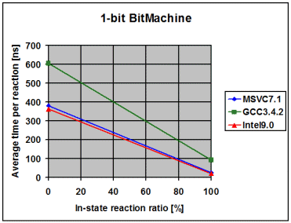
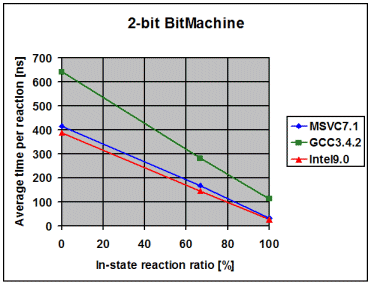
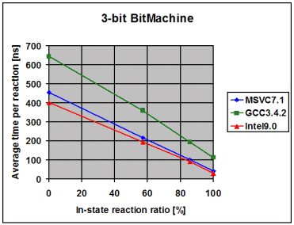
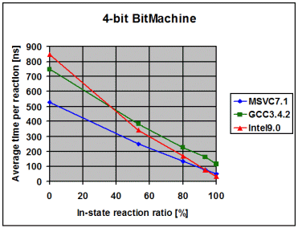
库在定义了 BOOST_STATECHART_USE_NATIVE_RTTI 的情况下使用.
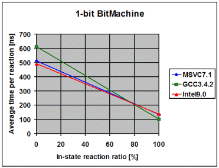
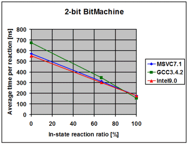
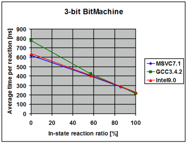
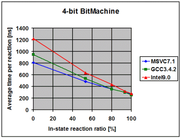
库在使用定制内存管理 (boost::fast_pool_allocator) 的情况下运行.
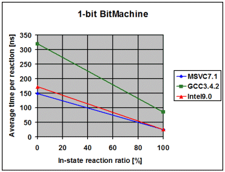
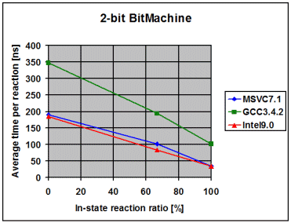
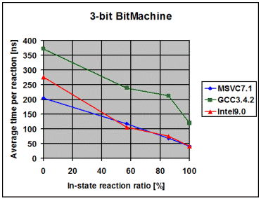
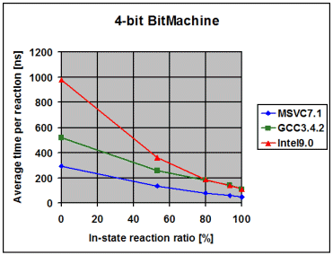
每个状态机的核心都是双分派的一个实现. 这是因为进入的事件 和活动状态共同决定了状态机将产生哪种 反应. 每次事件分派都是先一次虚函数调用, 再对合适的反应做线性搜索, 每个反应一次 RTTI 比较. 以下替代方案曾被考虑但被否决:
开箱即用时, 一切 (事件对象、状态对象、内部数据等) 都通过 std::allocator< void > (Allocator 模板参数的默认值) 分配. 对于满足以下前提的应用, 这应该已经足够:
如果应用程序不满足这些前提, Boost.Statechart 的内存管理可按以下方式定制:
event<>、state_machine<>、asynchronous_state_machine<>、fifo_scheduler<>、fifo_worker<>). 这会把所有分配重定向到传入的自定义分配器, 应能满足几乎所有项目的需要operator new() 和 operator delete(), 但这可能只在少数情况下有用RTTI 用于事件分派和 state_downcast<>(). 目前恰好有两个选项:
BOOST_STATECHART_USE_NATIVE_RTTI倾向于选项 2 有两个理由:
显而易见的候选是可执行文件驻留在 ROM 中的嵌入式系统. 其他候选是运行大量相同状态机的应用, 在这种情况下这一措施甚至可以减少 总体内存占用
在 32 位机器上, 一个空的活动状态通常需要不到 50 字节内存. 即使 非常复杂的机器, 同时活动状态通常也少于 20 个, 所以几乎所有机器都应能在不到 1KB 的内存下运行 (不计事件队列). 显然, 用户添加的任何状态局部成员都会增加每台机器的内存占用.
下面的排名可以大致说明哪个特性会消耗多少周期:
state_cast<>(): 迄今最耗周期的特性. 对合适的状态做线性搜索, 每访问一个状态使用一次 dynamic_cast state_downcast<>(): 对所请求的状态做线性搜索, 每访问一个状态使用一次虚调用和一次 RTTI 比较has_deep_history 或 has_full_history 的状态内部的所有最内层状态, 每次退出都必须在 (通常很小的) 历史映射中做一次二分查找. 历史槽位的分配只进行一次, 在首次退出时has_shallow_history 或 has_full_history 的状态的所有直接内层状态, 每次退出都必须在 (通常很小的) 历史映射中做一次二分查找. 历史槽位的分配只进行一次, 在首次退出时
修订于 03 December, 2006
版权所有 © 2003-2006 Andreas Huber Dönni
按 Boost 软件许可 1.0 版 (Boost Software License, Version 1.0) 分发. (随附文件 LICENSE_1_0.txt 或复制于 http://www.boost.org/LICENSE_1_0.txt)